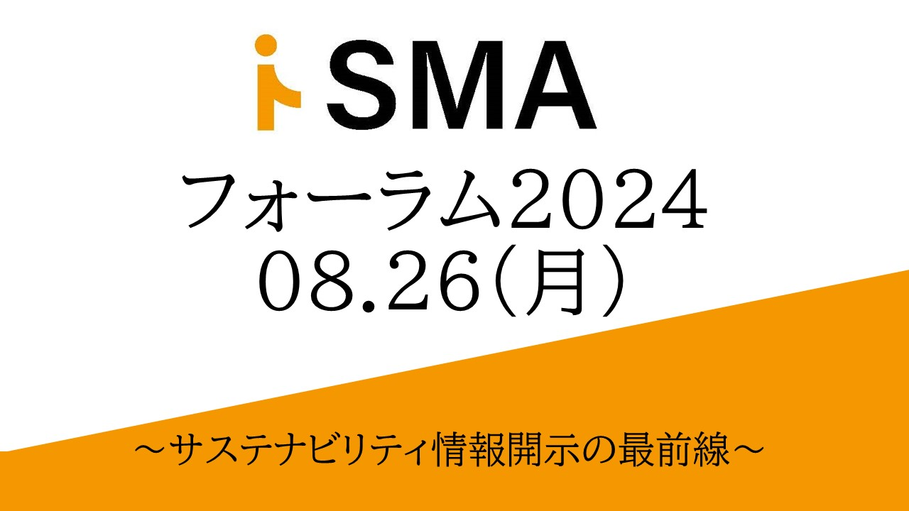

2024年9月2日、第1回 i-SMAフォーラムを開催いたしました。
- 開催日時
- 2024年8月26日（月）14:00〜19:00（開場13:30〜）
- タイトル
- i-SMA フォーラム 2024 〜サステナビリティ情報開示の最前線〜
- 形式
- 対面
- 会場
- AP市ヶ谷（東京都千代田区五番町1-10 市ヶ谷大郷ビル5階 Dルーム）
- 参加者数
- 112名（法人企業46社含む）
おかげさまで、法人企業46社を含む112名にご参加いただき、盛況のうちに終了いたしました。
第1部では「サステナブルファイナンスと情報開示・保証」をテーマに基調講演とパネルディスカッション（3セッション）が行われ、第2部ではネットワーキングイベントを開催いたしました。
ご参加いただいた皆様、ご登壇いただいた皆様に、心より御礼申し上げます。今後もi-SMAは、サステナビリティマネジメント＆アシュアランスの普及・発展に向けた活動を継続してまいります。
